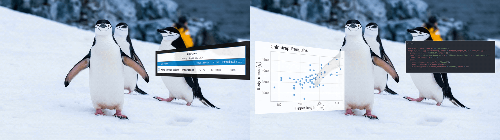

overlay renders ggplot2 or gt objects as well as code snippets into magick image objects, optionally adds a heads-up display (HUD) panel border, applies perspective warps, and composites the result over a background image with optional transparency.
This could be done quite easily in PowerPoint or other graphic design software, but writing this as a package lets us work with objects in our R environment programmatically and reproducibly.
Example outputs. Left: a gt table with an added border; Right: a ggplot2 object with perspective tilt and the underlying code as a carbon.js image. Photograph by Derek Oyen, Unsplash.

Installation
Install overlay from GitHub with remotes (or pak)
# install.packages("remotes")
remotes::install_github("luisdva/overlay")
# Alternatively, with pak
# install.packages("pak")
pak::pak("luisdva/overlay")This package uses magick (ImageMagick). Ensure ImageMagick is installed on your system (see System requirements below).
Overview
The package has five functions that can be used individually or chained together:
| Function | Behavior |
|---|---|
render_hud() |
Rasterizes a ggplot2 or gt object to a magick image |
hud_panel() |
Adds a frame around the rasterized image |
warp_hud() |
Applies a four-corner perspective distortion |
composite_hud() |
Composites the overlay onto a background image |
hud_overlay() |
Convenience wrapper for the full pipeline |
Quick start
library(ggplot2)
library(overlay)
p <- ggplot(na.omit(penguins), aes(bill_len, body_mass)) +
geom_point(alpha = 0.7) +
theme_minimal()
bg <- system.file("extdata", "penguins.jpg", package = "overlay")
out <- p |>
hud_overlay(
background = bg,
placement = "bottom-right",
size = "medium",
panel = TRUE,
tilt = "left",
opacity = 0.9
)
# View or save
# magick::image_browse(out)Usage
hud_overlay()
hud_overlay() wraps all the relevant functions (render, panel, warp, and overlay) in a single call. The object to overlay is the first argument so the ggplot2 and gt objects can be piped directly into the function.
hud_overlay(
overlay, # ggplot2 or gt object, or carbon image of a code snippet
background, # path, URL, or magick-image
placement = NULL, # "left", "right", "centre", "top", "bottom", "top-left", …
x = NULL, # pixel offset (overrides placement)
y = NULL,
margin = 40L, # edge gap when using placement
size = NULL, # "small", "medium", "large", "xl", "xxl"
width = 400, # explicit pixel dimensions (overrides size)
height = 300,
bg = "transparent",# background color for the rendered overlay
res = 150, # DPI resolution for rendering
panel = FALSE, # TRUE, FALSE, or named list forwarded to hud_panel()
tilt = NULL, # "none", "left", "right", "top", "bottom"
corners = NULL, # named list of c(dx, dy) offsets: tl / tr / bl / br
keep_size = TRUE, # crop/pad warped result back to original size
opacity = 0.85,
supersample = 2L, # anti-aliasing factor; increase for steep warps in case of visual artifacts
operator = "over" # ImageMagick operator for overlays
)Precedence: corners > tilt; explicit width/height > size; explicit x/y > placement.
tilt is a convenience preset. For full control, supply corners directly — each entry is a c(dx, dy) pixel offset from that corner’s natural position:
# Lean the panel to the left
p |>
hud_overlay(
background = system.file("extdata", "penguins.jpg", package = "overlay"),
corners = list(tl = c(-110, 0), bl = c(-110, 0))
)Multiple overlays with pipes
Since hud_overlay() returns a magick-image object, we can chain calls to add several overlays to the same background. Use the base pipe placeholder _ to pass the result from one overlay as the background for the next:
library(ggplot2)
library(overlay)
# Create a plot
penguin_plot <- ggplot(penguins, aes(x = species, fill = species)) +
geom_bar() +
theme_minimal() +
labs(title = "Penguin Species Count")
# Create code image
code <- 'ggplot(penguins, aes(x = species, fill = species)) +
geom_bar() +
theme_minimal() +
labs(title = "Penguin Species Count")'
code_img <- carbon_image(code, lang = "r", theme = "dark")
# Load background
bg <- system.file("extdata", "penguins.jpg", package = "overlay")
# Add multiple overlays using the pipe placeholder
plotandcode <- hud_overlay(
overlay = penguin_plot,
background = bg,
placement = "left",
size = "xl",
tilt = "left",
opacity = 0.85
) |>
hud_overlay(
overlay = code_img,
background = _, # Pipe placeholder - uses result from previous step
placement = "right",
size = "xl",
tilt = "none",
opacity = 1
)The _ placeholder (available in R ≥ 4.2.0) passes the output from the first hud_overlay() call as the background argument to the second call. This lets us build up complex compositions with multiple plots, tables, and code snippets on a single background image. Note that the tilt and placement options for each overlay are independent and not inherited from previous steps.
Step-by-step pipeline
Each function can also be called individually, which is useful for debugging or for fine-grained control over an intermediate step:
library(ggplot2)
library(overlay)
# Create a ggplot2 object
p <- ggplot(mtcars, aes(hp, mpg)) + geom_point()
# Bundled background
bg <- system.file("extdata", "penguins.jpg", package = "overlay")
# Rasterize
img <- render_hud(p, width = 500, height = 320, res = 150)
# Add a dark panel with a neon border
img <- hud_panel(
img,
padding = 20,
panel_color = "#111111CC",
border_color = "#39FF1488",
border_width = 8
)
# Perspective warp
img <- warp_hud(
img,
corners = list(tl = c(-90, 0), bl = c(-90, 0))
)
# Composite
out <- composite_hud(
background = bg,
overlay = img,
x = 60, y = 80,
opacity = 0.9
)
magick::image_browse(out)Code snippets as images
In addition to ggplot2 plots and gt tables, syntax-highlighted code snippets can also be added using carbon_image(). This function uses the community-developed carbonara API to generate code images styled with carbon.js themes. The endpoints may not always be responsive, but usually work after a few tries in the case of timeout errors.
library(overlay)
# Create a code snippet image
plotting_code <- 'library(ggplot2)
ggplot(mtcars, aes(wt, mpg)) +
geom_point(aes(color = factor(cyl))) +
theme_minimal() +
labs(title = "Fuel Efficiency")'
code_img <- carbon_image(plotting_code, lang = "r", theme = "dark")
# Overlay the code on a background
bg <- system.file("extdata", "penguins.jpg", package = "overlay")
out <- bg |>
hud_overlay(code_img,
width = 500,
height = 350,
placement = "center")carbon_image() supports both dark and light themes and by default is mostly hard-coded, but the output can be customized with additional parameters:
# Light theme with custom settings
code_img <- carbon_image(
plotting_code,
lang = "r",
theme = "light",
fontSize = "16px",
fontFamily = "Fira Code"
)Saving the result
hud_overlay() and composite_hud() return a magick-image object, which can be saved with magick::image_write()
magick::image_write(out, "result.png")Depends
- magick for image processing (requires ImageMagick to be installed on your system)
- ragg for crisp high-quality graphics rendering
- ggplot2 plots using the grammar of graphics
- gt for great-looking tables
- httr (suggested) for carbon code image API requests
System requirements
- ImageMagick (required by magick). Verify with
magick::magick_config()in R ormagick --versionin the terminal. - Fonts: when using custom fonts, make sure they are available.
LLM disclosure
This package was developed with extensive input from various Large Language models from multiple providers (Anthropic, Google, OpenAI, Groq), implemented via autocomplete, through Posit Assistant, Positron Assistant, the Continue and Roo Code extensions for Positron, ellmer, or in Terminal User Interfaces like Gemini CLI. This package is not necessarily ‘vibe-coded’, but includes as much AI-generated code as I think I’ll ever include in my work. Developing overlay was in part an experiment in LLM-assisted development, and also a way to get a better idea of token usage, costs, rate limits, and how the different implementations compare. I still take full responsibility for this code and its bugs.